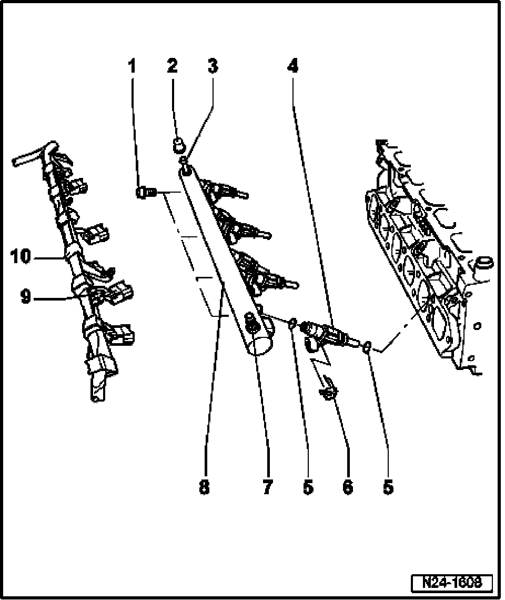

Fuel Distributor: Service and Repair
Fuel Distributor With Fuel Injectors, Disassembling And Assembling

1 10 Nm
2 Protective cap
- For bleeder valve
3 Bleeder valve
- Fuel pressure regulator and residual pressure. Refer to Oxygen Sensors and Oxygen Sensor Regulation Behind Catalytic Converter, Checking.
- Vent fuel supply system. Refer to Fuel Supply System Bleeding.
4 Fuel Injectors (-N30- to -N33-, -N83- to -N84-)
Checking. Refer to Fuel Injectors, Checking.
5 O-ring
- Always replace
- Lightly lubricate O-rings with clean engine oil before installing
6 Retaining clip
- Make sure clip is correctly seated on fuel injector and fuel distributor
7 Connection for supply line
8 Fuel rail
9 Connector
- Black, 2-pin
- Check for secure fitting
10 Wiring harness
- With harness connectors for fuel injectors
- Clipped in at wiring channel.